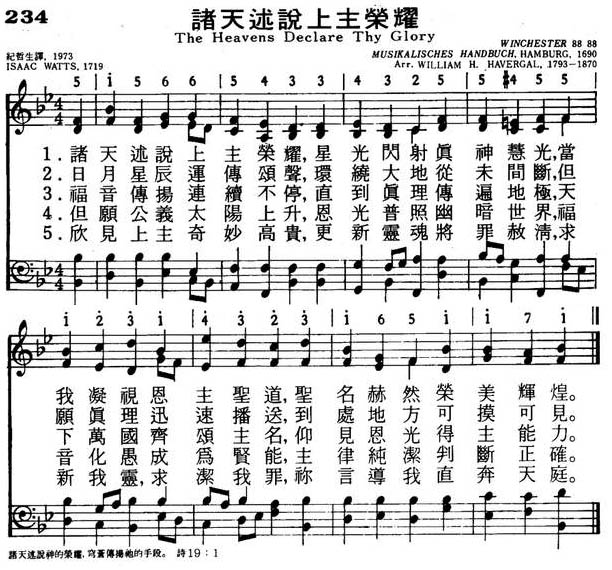

|
|
|
|
1 The heav'ns declare Thy glory, Lord, 2 The rolling sun, the changing light, 3 Sun, moon, and stars convey Thy praise 4 Nor shall Thy spreading gospel rest 5 Great Sun of Righteousness, arise, 6 Thy noblest wonders here we view |
234诸天述说上主荣耀
1.诸天述说上主荣耀，星光闪射真神慧光，
当我凝视恩主圣道，圣名赫然荣美辉煌。 2.日月星辰运传颂声，环绕大地从未间断， 但愿真理迅速播送，到处地方可摸可见。 3.福音传扬连续不停，直到真理传遍地级， 天下万国齐颂主名，仰见恩光得主能力。 4.但愿公义太阳上升，恩光普照幽暗世界， 福音化愚成为贤能，主律纯洁判断正确。 5.欣见上主奇妙高贵，更新灵魂将罪赦清， 求新我灵求洁我罪，你言导我直奔天庭。 |
|
https://www.mred365.cn/szxg/7237.html
 https://hymnary.org/hymn/HTLG2017/page/38
|
|
|
|
|


The heavens declare thy glory Music :CHURCH TRIUMPHANT by James William Elliott (1833 - 1915)) Words by Isaac Watts (1674 - 1748) based on Psalm 19. https://www.youtube.com/watch?v=bZQMIw_bKNc
LX1853
The Heavens Declare Thy
Glory
234诸天述说上主荣耀
| Text: | The Heavens Declare Thy Glory, Lord |
| Author: | Isaac Watts |
| Tune: | WINCHESTER NEW |

Tune Information
| Title: | WINCHESTER NEW |
| Meter: | 8.8.8.8 |
| Incipit: | 51566 54334 32554 |
| Key: | A Major |
| Source: | Musikalisches Handbuch |
| Copyright: | Public Domain |
Notes
The original version of WINCHESTER NEW appeared in Musikalisches Handbuch der geistlichen Melodien, published in Hamburg, Germany, in 1690 by Georg Wittwe. It was set to the text “Wer nur den lieben Gott” (see 446). An expanded version of the tune was a setting for "Dir, dir Jehova" (see 203) in Johann Freylinghausen's Geistreiches Gesangbuch (1704). The melody was also used by John and Charles Wesley (PHH 267) for their texts and was reworked by William J. Havergal as a long-meter tune in his Old Church Psalmody (1864). Havergal's version closely resembled its original 1690 form. Named for the ancient English city in Hampshire noted for its cathedral, the tune gained much popularity because of its extended use. It is called WINCHESTER NEW (also called CRASSELIUS) to distinguish it from WINCHESTER OLD (see 215 and 628).
Sing this dignified psalm tune in unison on the outer stanzas and in parts on the middle ones. Use solid organ tone and phrase in two long lines.
--Psalter Hymnal Handbook, 1988
"THE HEAVENS DECLARE THY GLORY, LORD" /hymnstudiesblog
"The heavens declare the glory of God; and the firmament sheweth His handywork" (Ps. 19.1)
INTRO.:
A hymn based on Psalm 19 is "The Heavens Declare Thy Glory, Lord." The text was written by Isaac Watts (1674-1748). It was first published in his 1719 Psalms of David Imitated in the Language of the New Testament. A number of different melodies have been used with the hymn. One tune (Crawford) is attributed to Franz Joseph Haydn (1732-1809). Several tunes have been ascribed to Haydn in various hymnbooks of the past, but many of them cannot be located among any of his published works. The arrangement was made by William Howard Doane (1832-1915). Among hymnbooks published by members of the Lord’s church during the twentieth century for use in churches of Christ, the text appeared with a familiar tune (Old Hundredth), attributed to Louis Bourgeoise, thought to be arranged by Guillaume Franc, and usually associated with William Kethe’s "All People That On Earth Do Dwell," in the 1925 edition of the 1921 Great Songs of the Church (No. 1) edited by E. L. Jorgenson, and the 1963 Abiding Hymns edited by Robert C. Welch. Today it is found with a tune (Uxbridge) by Lowell Mason, often used with Benjamin Beddome’s "God, In the Gospel of His Son," in the 1986 Great Songs Revised edited by Forrest M. McCann.
The song compares and contrasts God’s revelation in nature and in His word.
I. Stanza 1 talks about the heavens
"The heavens declare Thy glory, Lord; In every star Thy wisdom shines.
But when our eyes behold Thy Word, We read Thy Name in fairer lines."
A. The heavens and the things that are made declare the glory of God by
demonstrating His eternal power and godhead: Rom. 1.20
B. Even His wisdom shines in every star because He made them also: Gen. 1.16
C. However, in His Word, the Scripture, we read His name in fairer lines
because it contains everything that we need to know in our relationship to Him:
2 Tim. 3.16-17
II. Stanza 2 talks about the sun
"The rolling sun, the changing light, And nights and days, Thy power confess;
But the blest volume Thou hast writ Reveals Thy justice and Thy grace."
A. The sun was made to rule the day: Gen. 1.17-18
B. Thus, the days and nights confess God’s power because it was He who
separated them: Gen. 1.4-5
C. However, it is in the volume of His written word that we learn His grace:
Acts 20.32
III. Stanza 3 talks about the heavenly bodies
"Sun, moon, and stars convey Thy praise Round the whole earth, and never stand;
So why Thy truth began its race, It touched and glanced on every land."
A. The sun, moon, and stars all convey God’s praise because He made them: Gen.
1.14-15
B. They never stand still but move around the whole earth: Ps. 19.4-6
C. Thus the truth, like the sun, begins its race and touches on every land:
Col. 1.23
IV. Stanza 4 talks about the gospel
"Nor shall Thy spreading gospel rest Till through the world Thy truth has run;
Till Christ has all the nations blesses That see the light, or feel the sun."
A. God does not want the gospel to rest because it His power of salvation to
all mankind: Rom. 1.16
B. Therefore, He wants it to go through the whole world: Mk. 16.15-16
C. In this way, all nations that see the light and feel the sun can learn God’s
truth: Matt. 28.18-20
V. Stanza 5 talks about the Sun of Righteousness
"Great Sun of Righteousness, arise; Bless the dark world with heavenly light.
Thy gospel makes the simple wise, Thy laws are pure, Thy judgments right."
A. Just as the physical sun gives light to the earth, so Christ is the Sun of
Righteousness: Mal. 4.2
B. Therefore, He came to bring heavenly light to this dark world: Jn. 8.12
C. The means by which He does this is His laws and judgments: Ps. 19.7-9
VI. Stanza 6 talks about the blessings of God’s word
"Thy noblest wonders here we view In souls renewed, and sins forgiven;
Lord, cleanse my sins, my soul renew, And make Thy word my guide to heaven."
A. By His word, God has made it possible for us to view His noblest wonders
have sins forgiven through the blood of Christ: Eph. 1.7
B. Therefore, we must turn to God, in obedience to His will, that He might
cleanse our sins: Ps. 19.12-13
C. And we must let Him make His word our guide to heaven: Ps. 119.105
CONCL.:
Most books use only some combination of four of the above stanzas. It seems as if a generation raised on half-hour sitcoms and thirty-second news sound bytes simply does not have an attention span long enough to sing more than four stanzas of a hymn–and when there are four, we often have to omit the third! Watts actually did four separate metrical paraphrases of Psalm 19. The heading for this one was "The books of nature and of Scripture compared." Forrest McCann noted, "Watts based his method of handling the Old Testament text on that of the Apostle Paul in Romans 10:18–he applied the language." The book of Scripture points our minds to the God whose book of nature we can see as we tell Him, "The Heavens Declare Thy Glory, Lord."
https://hymnstudiesblog.wordpress.com/2009/06/13/quotthe-heavens-declare-thy-glory-lordquot/